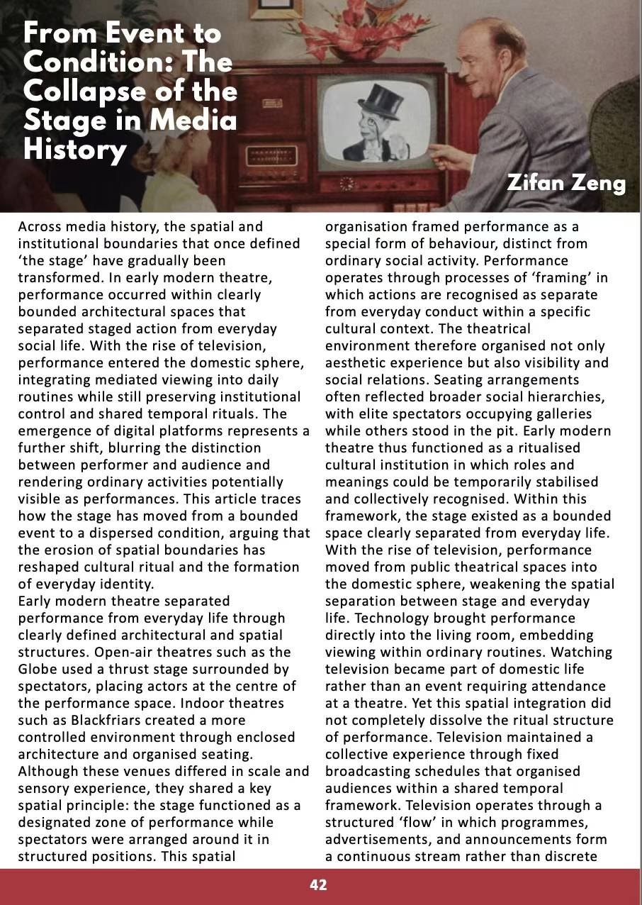
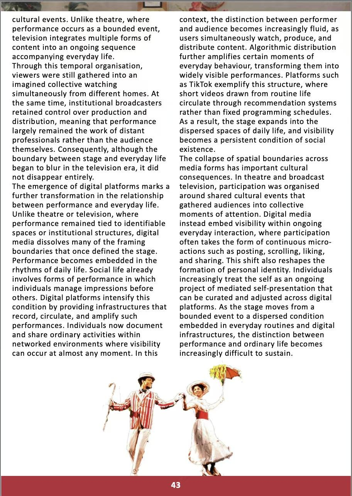

The History Student TimesVol. 2 · 2025/26 · pp. 42–43
From Event to Condition
The collapse of the stage in media history: from the theatre, to the living room, to the feed.
The essay traces how “the stage” moved from a bounded event to a dispersed condition.
- Publication
- The History Student Times, University of Leeds
- Issue
- Vol. 2 (2025/26), pp. 42–43
- Type
- Sole-authored essay
- Themes
- Performance, media history, platforms, everyday identity
01The argument
Bounded event
The theatre
The Globe · BlackfriarsEarly modern theatres like the Globe and Blackfriars separated performance from everyday life through architecture and seating.
Shared ritual
The living room
TelevisionTelevision brought performance into the home but kept a shared ritual through schedules and institutional control.
Dispersed condition
The feed
Digital platformsDigital platforms dissolve the remaining frames.
Performance becomes embedded in the rhythms of daily life.
Recommendation systems amplify ordinary moments.
The self becomes an ongoing project of mediated self-presentation.
Terminus
The line between performance and ordinary life becomes hard to sustain.
02As published



